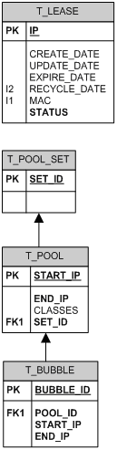

Hsqldb Back-end
This is the default back-end for DHCP Cluster. It is based on “Hypersonic DB” which is a simple and very fast database in pure Java, suitable for small to medium size deployments.
This back-end allows for fast deployment of end-to-end DHCP solutions without installing or managing a separate database (MySQL, Oracle...).
This back-end offers high brute performance, but is not suitable for high-availability cluster solutions or highly scalable services.
Pros
- Pure Java module running in the same process as the DHCP server - simple to install and to manage - equivalent to many other free solutions
- Very fast database engine capable of managing requests in-memory; it can be typically 20x faster than classical databases
Cons
- database is not multi-threaded (yet multi-thread safe); this can become a bottleneck issue for very high performance servers
- there is no support for active high-availability modes allowing automatic failover from one server to another in case of hardware failure
Design decisions
The Hsqldb back-end is kept as small and simple as possible.
It is currently only used to keep track of client leases. All other configuration parameters are stored in a single XML file, separated in 4 sections: front-end, back-end, global parameters, network topology.
There is basically only one persistant table: T_LEASE, which stores usage of IP addresses.
Other non-persistent table are created in-memory for lease calculation and OFFER tracking:
- minimal topology description: T_POOL lists all dynamic address pools available for address distribution, all pools in the same network are linked through the T_POOL_SET table
- to accelerate calculation of free addresses in pools, a T_BUBBLE keeps track of blocks (bubbles) of free addresses in each pool. These bubbles listed through a linked list.
- offers are temporarily kept in the table T_OFFER which is memory-only (not persistent), since offers have only a 60 seconds life-time. A timed-out offer becomes a free bubble again.
Running modes and performance
During debug and development, it is interesting to run the db in “Server” mode, which opens a server socket. The front-end connects via this socket despite the fact that the db runs in the same VM as the front-end. This allows for external client connection for manual data inspection. For maximum performance, you can swith to in-process mode where communication goes directly without going through network layers; this however prevents external client connection.
TODO : howto and performance gain
The table T_LEASE is kept entirely in-memory by default for simpliest and maximum performance. Data commited is however immediately written to disk into a SQL script. This SQL script is completely reloaded at next startup.
If the lease volume increases widely, it can be interesting to switch this table to cached mode, where the data is kept on disk and only partially cached in memory. Performance will be slightly reduced but server restart will be faster.
TODO
Leases state transitions

Data model

| Table T_LEASE | ||
|---|---|---|
| IP | BIGINT PK | binary (long) representation of the IPv4 address of the lease |
| CREATE_DATE | TIMESTAMP | time when the lease was initially created for this client (mac) |
| UPDATE_DATE | TIMESTAMP | time when the lease was last updated |
| EXPIRE_DATE | TIMESTAMP | end of lease time |
| RECYCLE_DATE | TIMESTAMP | time when the IP can be reallocated (including a secure margin to take into account clock drifts) |
| MAC | VARCHAR | MAC address of the client |
| STATUS | INTEGER | current status of the lease -1: ABANDONED (address not usable) 0:FREE 1:OFFERED 2:USED |
| Table T_POOL_SET | ||
|---|---|---|
| SET_ID | BIGINT PK | id (long) of the pool set |
| Table T_POOL | ||
|---|---|---|
| START_IP | BIGINT PK | start address of the pool as binary (long) IPv4 address |
| END_IP | BIGINT | end address of the pool as binary (long) IPv4 address |
| CLASSES | INTEGER | [reserved for future use] |
| SET_ID | BIGINT | foreign key to T_POOL_SET entity |
| T_BUBBLE | ||
|---|---|---|
| BUBBLE_ID | INTEGER PK | auto-increment identifier |
| POOL_ID | BIGINT | foreign key to T_POOL entity |
| START_IP | BIGINT | start address of the free address bubble |
| END_IP | BIGINT | end address of the free address bubble |
Serving DHCPDiscover
The first sequence in IP address allocation is the client sending a DHCPDiscover request and the server sending back a DHCPOffer with a (hopefully) proposed IP address.
The internal sequence when receiving a DHCPDiscover is as follows:
- Applying Front-End rules to filter out requests (cf. Front End TODO)
- Find out in which subnet the client is, hence which address pools are eligible for address allocation
- Check if there rules allocating a static address to this client, if so directly send back the response
- If there are dynamic addresses pools, call the DB stored procedure “DHCP_DISCOVER” to ask for an IP address
DHCP_DISCOVER stored procedure
This stored procedure is responsible for finding a suitable IP address for the client.
Pre-conditions:
- TODO
Batch clean-up
When leases RECYCLE_DATE is past, they are eligible for garbage collection. The garbage collector is called every 5 minutes to reclaim free leases.
Design issue: there can be a significant delay between the time a lease has expired and the time when the address is free to be allocated to another client. The trade-off is in favor of runtime performance causing potentially some address starving in extreme conditions. However, a specific “urgent” clean-up may be introduced in case of an free address starvation.